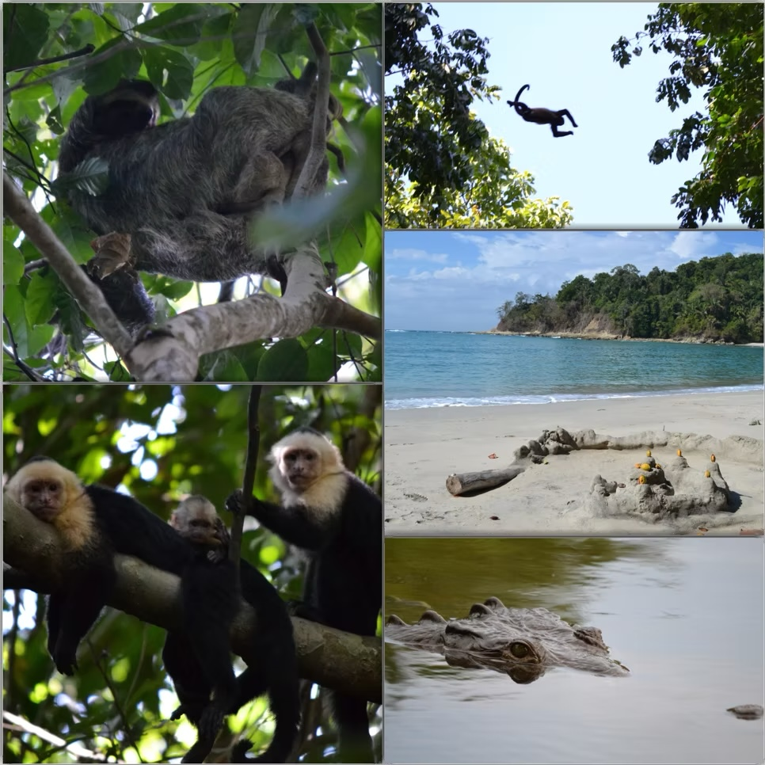

Semana Santa（セマナサンタ）をご存じだろうか。
Pascua（イースター・復活祭）という言葉は聞いたことがあるかもしれない。Semana Santaはキリスト教の伝統行事で、イースターに先立つ1週間のこと——キリストの受難から死、そして復活に至るまでの過程を記念する週だ。
宗教的に非常に重要な週間であると同時に、現在はバケーションを楽しむ週間にもなっており、この時期はコスタリカ国中で旅行者が急増する。自分も4月のSemana Santaを使って、コスタリカの人気観光地へ向かった。
マヌエル・アントニオ国立公園
目的地はマヌエル・アントニオ国立公園。首都サンホセから3時間半ほどとアクセスが良く、道も整備されて歩きやすい公園だ。コスタリカ国内でも有名なビーチを擁し、海と山を一度に楽しめる場所として知られている。
野生動物だらけの公園
この公園に生息する動物の種類が半端じゃない。ナマケモノ、ホエザル、ノドジロオマキザル、リスザル（他の場所では発見が難しい）、アライグマ、イグアナ……ガイドなしでも木の上を見上げていれば何かしらに出会える。
さらに公園の出口から程近い川には野生のアメリカワニが生息している。近くの看板には「ワニに注意、泳いじゃダメ」と書いてあった。中米らしい安全管理の仕方に、思わず笑ってしまった。ちなみに極々稀に、河口付近を泳いでいた観光客が襲われることがあるらしい。笑えない。

サーフィンと日本人
この公園はサーフィンスポットとしても有名で、サーフボードの貸し出しをしているお店には日本人女性が働いていた。久しぶりに聞く日本語に、なんだかホッとした。
Semana Santaの週は観光地がどこも混んでいる。でも、それだけみんながこの時間を大切にしているということでもある。混雑を覚悟で行く価値のある公園だった。
今回訪れた場所
1
マヌエル・アントニオ国立公園 (Parque Nacional Manuel Antonio)
首都サンホセから車で約3時間半 / ビーチと熱帯雨林・野生動物が一度に楽しめる